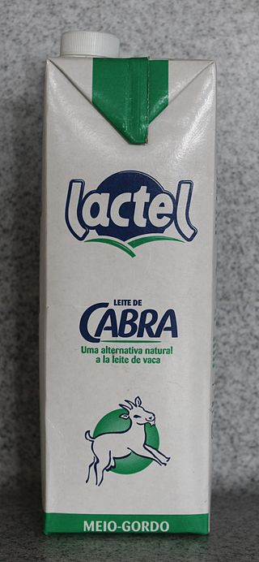

Le lait de chèvre est le lait que produit la femelle de la Chèvre domestique (Capra hircus hircus) et qui est généralement consommé par les chevreaux.
Moins utilisé en alimentation humaine que le lait de vache, il est notamment employé pour la fabrication de fromage de chèvre.
La bonne digestibilité des laits de chèvre pourrait s’expliquer en partie par leur teneur en acides gras courts, par la petite taille des globules gras qui les composent, mais également par leur richesse en triglycérides à chaîne moyenne et courte.
La réputation d’innocuité du lait de chèvre en matière d’allergie mérite en revanche d’être fortement relativisée.
|  |

|